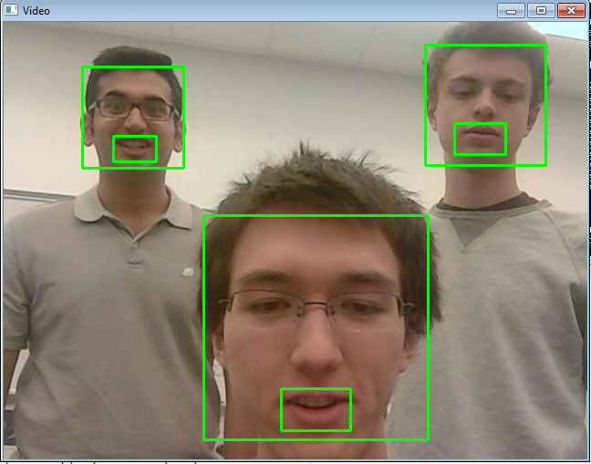

Implementation
Smile Detector:
OpenCV has a library dedicated to identifying different regions of human faces and smiles. We incorporated these libraries to create a face and smile detector on a computer. Essentially the program takes the video feed from a webcam, runs the detector on the images, draws a square around the face and mouth regions, and shows the results in a live window. To increase the efficiency and accuracy of the mouth detector, we limited it to only analyze the images within the detected face regions.
This beginning iteration worked very well for our purposes and consistently delivered working results. Occasionally the program would identify faces in the background that were not there and the face detector would only detect them if the person’s face was angled directly toward the camera with some flexibility for faces that were turned slightly away from the camera. Using this as a starting block, we tried to incorporate the OpenCV smile detector. However, no matter how much testing or strategies we tried to use, we could not get it to produce any working results. One of our main strategies was to limit the smile detector to the area within the detected face and later to the lower half of it, but it continued to fail. We then decided to construct our own smile detector.
Authors and Contributors
You can @mention a GitHub username to generate a link to their profile. The resulting <a> element will link to the contributor's GitHub Profile. For example: In 2007, Chris Wanstrath (@defunkt), PJ Hyett (@pjhyett), and Tom Preston-Werner (@mojombo) founded GitHub.